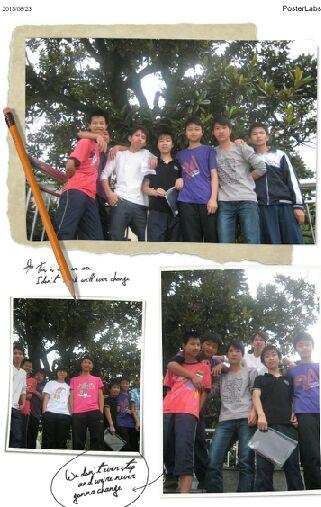
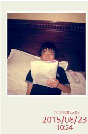
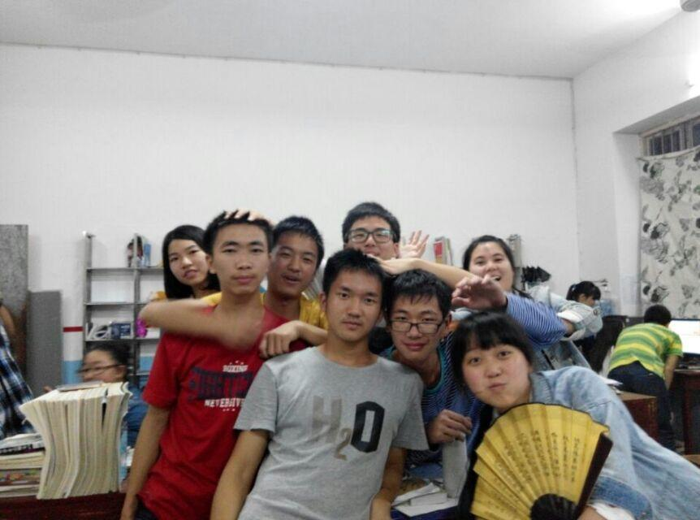
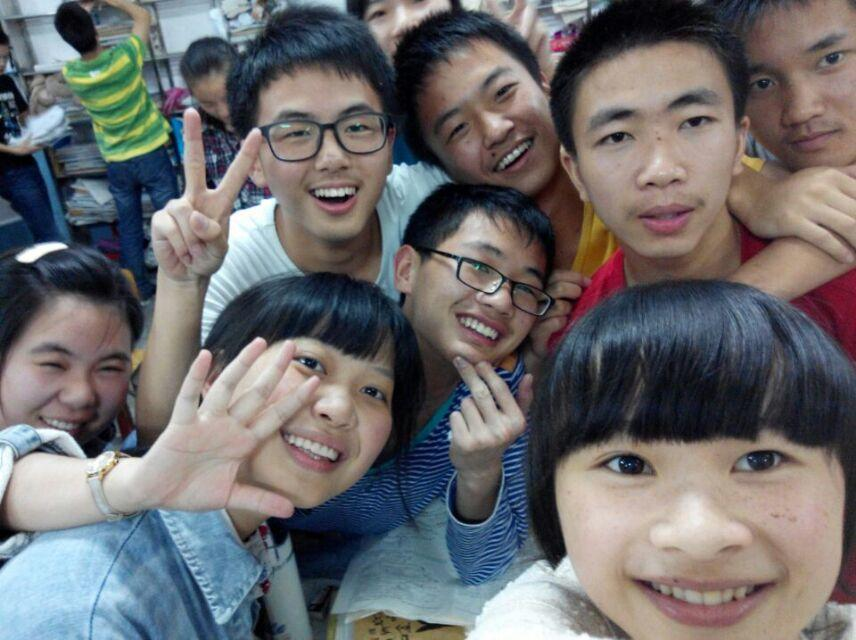
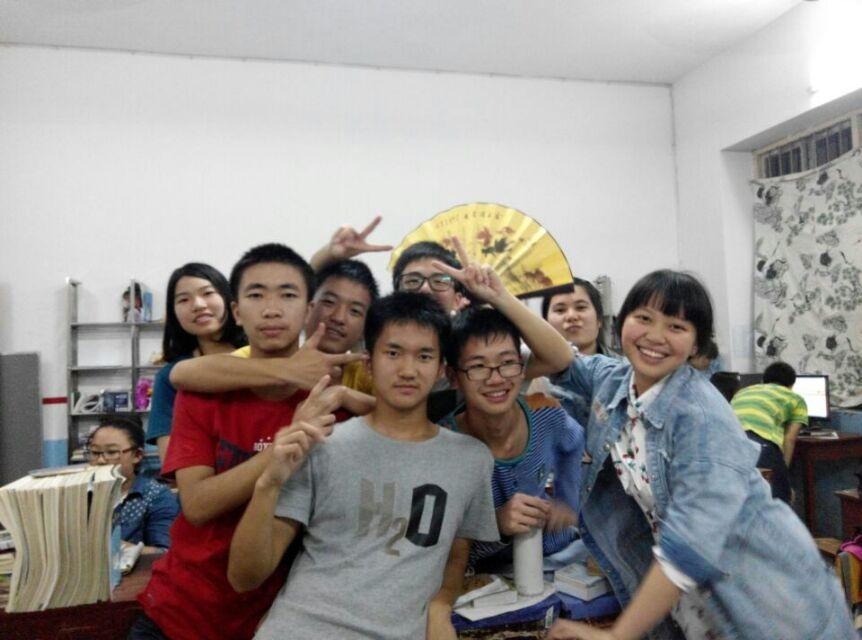
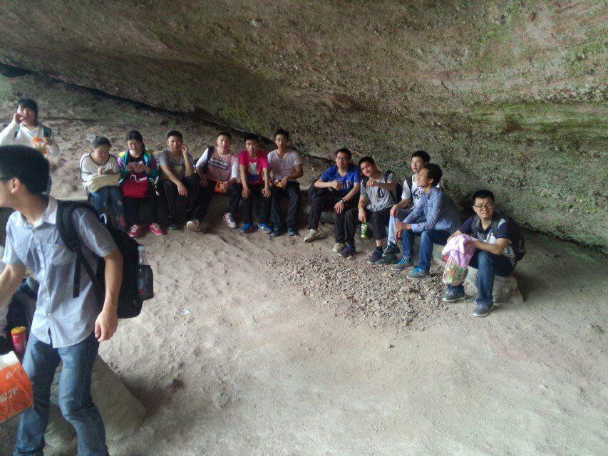

本文写于2015年8月27日。在前往大学之前，在长沙到南京的高铁上，我思绪泉涌，文思如尿崩。
很难想象，三个月前还在一中教室埋头苦读备战高考的我，如今正坐在通往大学的列车上。在考前还对高考有点畏惧的我，在不知不觉中就结束了十八年人生中最为重要的一次考试。三个月颓废的暑假悄然滑过，向我走来的是崭新却又陌生的大学，是我曾经无数次幻想过的象牙塔，如今却成为了触手可及的现实，而那些曾经奋斗过的岁月和那些陪我一起度过青涩岁月的人和事，却无法忘怀，随着窗外后退的风景一起，凝固在那年夏天，永远无法磨灭。
是否还记得曾经的230班？你是我初中时期最为宝贵的三年，是我太年少的岁月。如今已从初中毕业了三年，转眼高中也已度完。其实三年不长也不短，刚好能让一个人的心理成熟一个层次，那些曾经陪我度过三年美好时光的朋友，如今你们又在哪里？是否还记得当年在寝室中唱歌被王征红叫出去受冻的情形？是否还记得暑假补课一群人去网吧上网被李爱华罚上下蹲的经历？是否还记得华山哥带病上课，蒋时莲怀孕上课的画面？是否还记得大家在食堂吃饭比谁吃饭快的情景？是否还寝室一群人共用一包洗发液的往事？蹲巷，收更，关羽，老邓，这些事和人你们是否还一如从前那般耳熟能详？虽然曾经的日子已经逝去，但仍旧可以刻骨铭心。


那些我们以为会念念不忘的事就在我们念念不忘的过程中，被我们遗忘了，所以请牢记于心，无论世俗如何变化，光阴怎样流转，真正纯洁真诚的事物是不会被岁月尘封，而会随着岁月一起变得弥足珍贵，在如海的记忆中闪闪发光。每当想起，总会有一种莫名的亲切感，毕竟那是我们一起走过的最有分量的一段人生！
离开230班后，我便踏入了高379班，这个被称为一中重点班的地方。在这个陌生却十分好奇的环境中，我结识了一群新的朋友。在这里，我也学会了初中不能教给我的东西，是知识，是成长，是自信，是责任，是担当，是我满腔的热血，是我如火的青春，是379改变了曾经的我，迎来了如今的我。那些过往的画面又浮现在脑海，这里有我三年的喜怒哀乐，三年的汗水与努力，我见证了379三年的变化，379见证了我的成长，我们把最好的三年给了彼此，也义无反顾地无怨无悔。有人说高三是炼狱，但青春的意义绝不在于这炼狱般的高三，却一定需要这炼狱般的高三来锻造并加以最深刻的阐释。只有真正经历了高考这场战争的人才会真正的体会到:原来我也可以。铁打的营盘流水的兵，生活有时就是如此讽刺。我们因高考而相聚在379，却也因高考而离别。在我印象中的，是军训时当领操员活泼开朗的邓洁，是当了三年卫生委员尽职尽责的蒋碧君，是与我谈天说地的寝室兄弟，是与我到处吹牛皮的王文泽，是排球赛上带伤上场的易傲飞，是与我一起在球场挥洒汗水的李德桥，是育我三年的老师，是陪我同喜悦，共患难的379全体成员，是我满满的青春岁月，是我难忘的金色华年。那真是一段疯狂的岁月，其中的欢喜与苦涩也许只有我一个人懂。六月七日高考第一天考完后的下午，本打算在物理实验室自习的一群大男生，竟心血来潮，放下手中的笔，到球场上打篮球打到天黑看不见篮筐才罢休，因为我们除了高考的压力之外，也清楚的知道，明天考完就是离别之日，以后这样的日子就不多了。暑假大家都请客吃饭，在这期间我也了解到大家除学校生活之外的另一面，心中的感慨万千，这份情谊，我会把它装进远去的行囊，一直留在身边。那些逝去的日子，无法重来，那些一起奋斗过的兄弟，又怎能忘怀？那个曾经默默喜欢过的女孩，埋藏在心海，花开花谢时光流水飞快。379，我们，来日方长！




不悔梦归处，只恨太匆匆。一只手握不住流沙，两只眼留不住落花。在懵懂的岁月里，我只收藏了简单的笑脸。曾经的岁月还未握紧就随风而逝，留我在风中颤抖！现在的我，怀念从前，是因为太留恋，是因为有一群朋友相伴，有曾经的青涩纯真。六年时光，是我能触手可及的从前。如今我已踏上大学的旅途，去奔赴自己的前程。岁月带得走时间，却带不走我对你的思念，毕业带得走思念，却带不走你我同窗的情谊。我的朋友，但愿美好的回忆，不要在岁月里匆匆走过，让它永驻我们心中。青山不改，绿水常流。栀子花开的时节，我们江湖再见！ 谨以此篇，与君共勉！
（歌曲来源：网易云音乐）